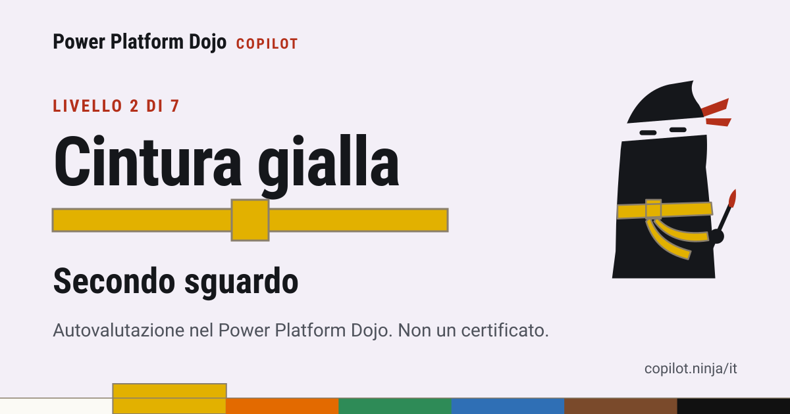

Livello 2 di 7, Secondo sguardo
Cintura gialla
Autovalutazione su un sito indipendente. Non un certificato.
Cosa saprai fare con questa cintura: Chiedere bozze e farle controllare in modo che gli errori emergano prima dell'invio.
Questa pagina appartiene a una carta condivisa dal Power Platform Dojo. La carta mostra il punto di partenza dall'autotest con sette domande oppure una cintura le cui tecniche la persona ha segnato da sé come esercitate.

Cos'è il Power Platform Dojo?
Tecniche ninja per Microsoft Copilot Chat e Copilot Studio, dalla cintura bianca alla cintura nera. Ognuna con fonte su Microsoft Learn e data di verifica. Senza iscrizione e senza cookie.